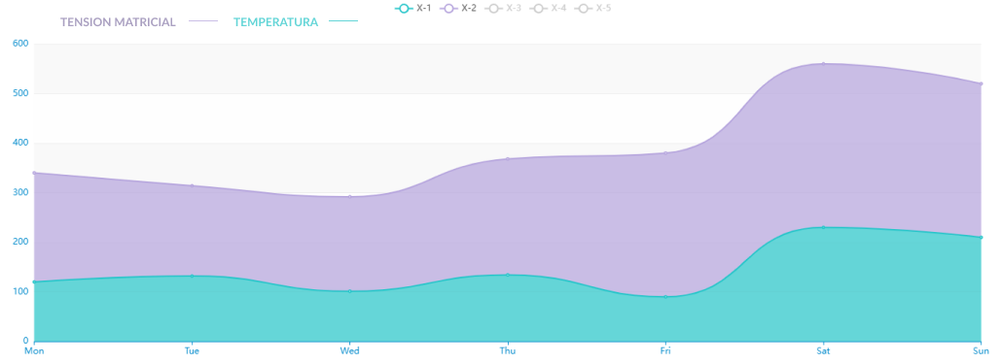

12Cb
TENSIÓN MATRICIAL
TENSIÓN MATRICIAL CORRECTA
Para el correcto desarollo de la planta la tensión matricial debe de mantenerse entre valores minimos de 6 Cb y máximos de 16 Cb. En determinadas ocasiones estas medidas pueden variar.
ON
OFF